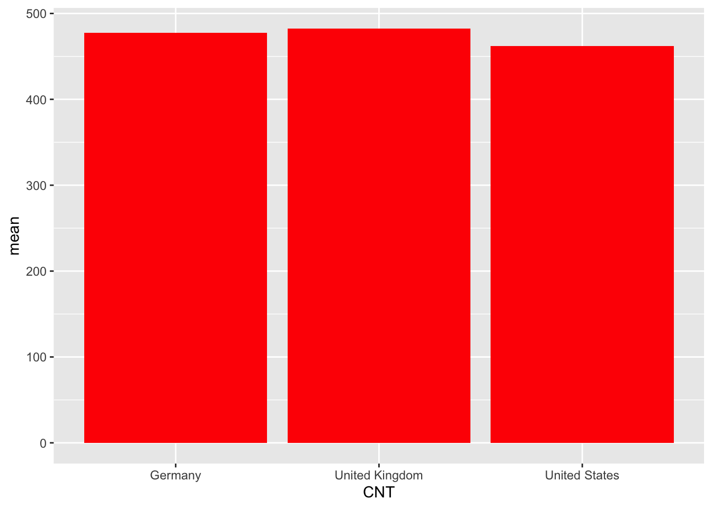
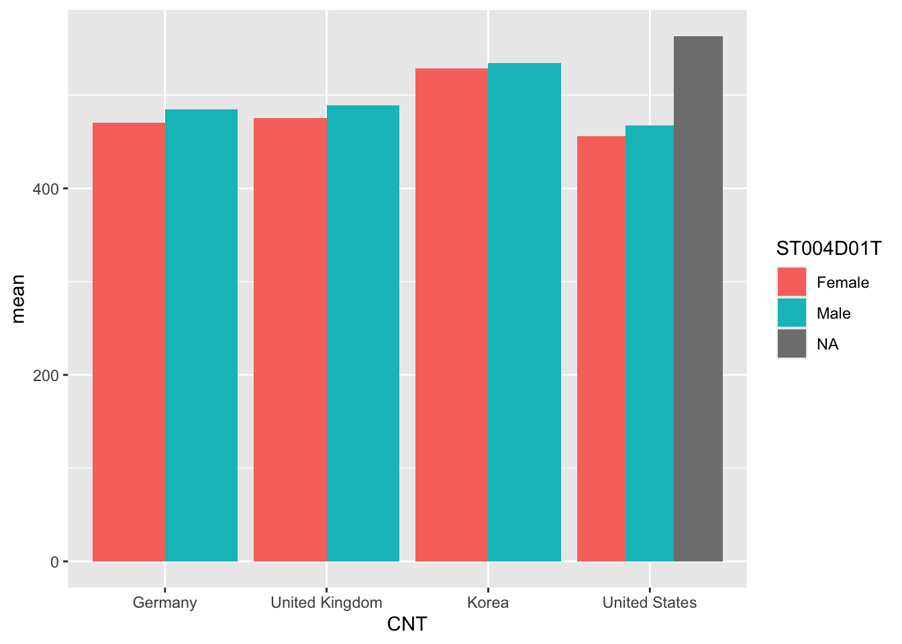
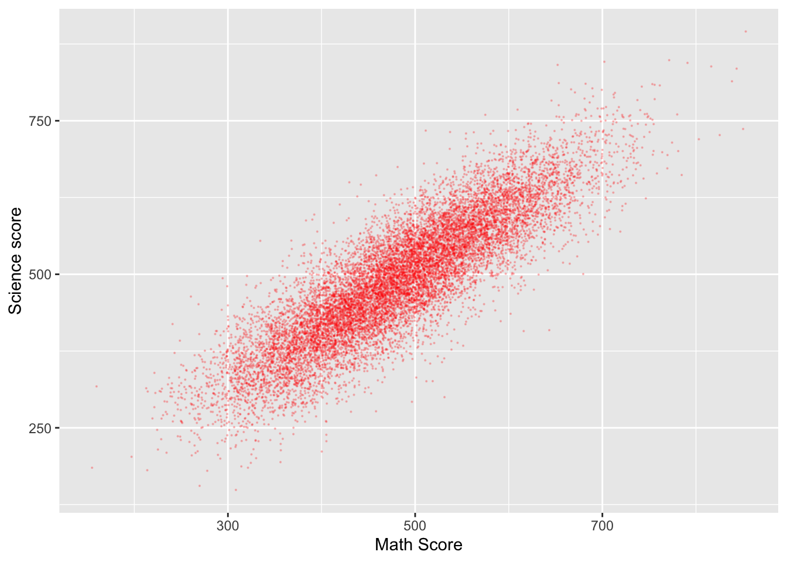
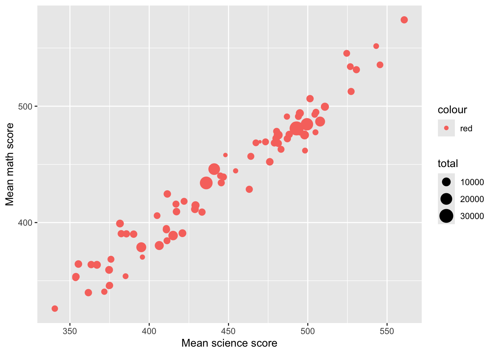

The pages below set out a series of graded challenges that you can use to test your R and statistical skills. Sample code that solves each problem is included so you can compare your solution with ours. Don’t worry if you solve something in a different way, there will be multiple solutions to the same task. The tasks are all set on the PISA_2018 data set: PISA_2018
To load the data, use the code below:
0.1 Task 1 Practice creating a summary table #1
Create a table that summarises the mean PISA science scores by country. You will need to use the group_by, summarise and mean functions.
Show the code
PISAsummary<-PISA_2022%>%# Pipe the overall frame to a summary data.frameselect(CNT, PV1SCIE)%>%# Select the two required columnsgroup_by(CNT) %>%# Group the entries by countrysummarise(meansci =mean(PV1SCIE)) # calculate means for each countryprint(PISAsummary)
# A tibble: 80 × 2
CNT meansci
<fct> <dbl>
1 Albania 376.
2 United Arab Emirates 436.
3 Argentina 415.
4 Australia 508.
5 Austria 494.
6 Belgium 495.
7 Bulgaria 422.
8 Brazil 406.
9 Brunei Darussalam 445.
10 Canada 499.
# ℹ 70 more rows
Extension: use the signif function to give the responses to three significant figures
0.2 Task 2 Practice creating a summary table (including percentages) #2
Use the table function to create a summary of numbers of speakers of different languages (LANGN) recorded in the data frame for the UK. Use the mutate function to turn these into percentages (you will need to calculate a total)
Show the code
UKPISA<-PISA_2022%>%select(CNT,LANGN)%>%# Select the country school type filter(CNT =="United Kingdom")%>%# filter for the UKselect(LANGN) %>%# Just select the language (removing country)droplevels() UKPISA<-xtabs(data=UKPISA, ~ LANGN) # Create a summary of counts# To manipulate the table it isUKPISA<-as.data.frame(UKPISA) # easier to convert it to a # a data.frameUKPISA<-mutate(UKPISA, per = Freq /sum(Freq)*100)UKPISA
LANGN Freq per
1 Scots 387 2.98334875
2 English 9710 74.85353068
3 Welsh 137 1.05612088
4 Scottish Gaelic 7 0.05396238
5 Irish 28 0.21584952
6 Other European languages (QSC) 154 1.18717237
7 Ulster Scots 41 0.31606537
8 A non-European Union language 128 0.98674067
9 Another language (QUK) 809 6.23650940
10 Missing 1571 12.11069997
Show the code
# If you want to sort the data (arrange descending by the percentage vector)UKPISA<-UKPISA%>%arrange(desc(per))UKPISA
LANGN Freq per
1 English 9710 74.85353068
2 Missing 1571 12.11069997
3 Another language (QUK) 809 6.23650940
4 Scots 387 2.98334875
5 Other European languages (QSC) 154 1.18717237
6 Welsh 137 1.05612088
7 A non-European Union language 128 0.98674067
8 Ulster Scots 41 0.31606537
9 Irish 28 0.21584952
10 Scottish Gaelic 7 0.05396238
0.3 Task 3 Practice pivoting a table
Convert a table of UK Science, Maths and Reading scores, extracted from the main data set, into the long format R prefers. In the long format, each score becomes a single so each student will have three entries.
Show the code
# Create a data frame in wide format, with three columns for each student's scores (math, reading and science)UKScores<-PISA_2022%>%select(CNT,PV1MATH, PV1READ, PV1SCIE)%>%filter(CNT =="United Kingdom")%>%select(PV1MATH, PV1READ, PV1SCIE)# Use pivot longer to turn the three columns into one. First, pass pivotlonger the dataframe to be converted, then the three columns# to convert into one, the name of the new longer column and the# name of the new scores columnUKScores<-pivot_longer(UKScores, cols =c('PV1MATH', 'PV1READ', 'PV1SCIE'),names_to ='Subject', values_to ='Score' )
0.4 Task 4 Graphing Practice #1 A Bar Chart
Draw a bar chart of the mean mathematics scores for Germany, the UK, the US and China
Show the code
Plotdata<-PISA_2022%>%select(CNT, PV1MATH)%>%filter(CNT =="United Kingdom"| CNT =="United States"| CNT =="Germany"| CNT =="B-S-J-Z (China)")%>%group_by(CNT)%>%summarise(mean =mean(PV1MATH))ggplot(Plotdata, # Pass the data to be plotted to ggplotaes(x = CNT, y = mean))+# set the x and y varibalegeom_col(fill ="red") # plot a column graph and fill in red

0.5 Task 5 Graphing Practice #2 A Bar Chart with two series
Draw a bar chart of the mean mathematics scores for Germany, the UK, the US and Korea for boys and girls
Show the code
Plotdata<-PISA_2022%>%select(CNT, PV1MATH, ST004D01T)%>%filter(CNT =="United Kingdom"|CNT=="United States"| CNT =="Germany"|CNT =="Korea")%>%group_by(CNT, ST004D01T)%>%summarise(mean =mean(PV1MATH))ggplot(Plotdata,aes(x = CNT, y=mean, fill = ST004D01T))+# Setting the fill to the gender# variable gives two seriesgeom_col(position =position_dodge()) # position_dodge here means the

Show the code
# means the bars are plotted # side by side
0.6 Task 6 Graphing Practice #3 A scatter plot
Plot a graph of science scores against mathematics scores for students in the UK
Show the code
Plotdata<-PISA_2022%>%# Create a new data frame to be plottedselect(CNT, PV1MATH, PV1SCIE)%>%# Choose the country, and scores vectorsfilter(CNT =="United Kingdom") # Filter for only Uk resultsggplot(Plotdata, # Pass the data to be plotted to ggplotaes(x = PV1MATH, y = PV1SCIE))+# Define the x and y variablegeom_point(size =0.1, alpha =0.2, colour="red")+# Use geom-point to create a scatter # graph and set the size of the point # alpha (i.e transparency)labs(x ="Math Score", y ="Science score") # Add clearer labels

0.7 Task 7 Graphing Practice #4 A scatter plot with multiple series
Plot a graph of science scores against mathematics scores for students in the UK, with data split into two series for boys and girls
Show the code
Plotdata<-PISA_2022%>%# Create a new dataframe to be plottedselect(CNT, PV1MATH, PV1SCIE, ST004D01T)%>%filter(CNT =="United Kingdom") # Filter for only Uk resultsggplot(Plotdata, aes(x = PV1MATH, y = PV1SCIE, colour = ST004D01T))+geom_point(size =0.1, alpha =0.2)+# As above, but set colour by the gender varibalelabs(x ="Math Score", y ="Science score")
0.8 Task 8 Graphing Practice #4 A scatter plot with varying size points
Plot a graph of mean science scores against mean mathematics scores for all the countries in the data set. Vary the point size by the number of students per country.
Show the code
Plotdata<-PISA_2022%>%select(CNT, PV1MATH, PV1SCIE) %>%group_by(CNT) %>%summarise(meansci =mean(PV1SCIE), meanmath=mean(PV1MATH), total=n())# Summarise finds mean scores by countries and n() is used to sum# the number of students in each countryggplot(Plotdata,aes(x = meansci, y = meanmath, size = total, colour ="red"))+# The size aesthetic is set to the total entries value computed# for the data setgeom_point()+labs(x ="Mean science score", y ="Mean math score")

0.9 Task 9 Graphing Practice #5 A mosaic plot
Plot a mosaic plot of the number of students who speak (use LANGN) French and Spanish in the whole data set
Using the PISA 2022 data set, determine if there are statistically significant differences between the science, reading and mathematics scores of the UK and the US.
Show the code
# Create data frames with the score results for UK and USUKscores<-PISA_2022%>%select(CNT,PV1MATH,PV1READ, PV1SCIE)%>%filter(CNT =="United Kingdom")USscores<-PISA_2022%>%select(CNT,PV1MATH,PV1READ, PV1SCIE)%>%filter(CNT =="United States")# Perform the t-test with maths resultst.test(UKscores$PV1MATH, USscores$PV1MATH)
Welch Two Sample t-test
data: UKscores$PV1MATH and USscores$PV1MATH
t = 12.614, df = 7958.4, p-value < 2.2e-16
alternative hypothesis: true difference in means is not equal to 0
95 percent confidence interval:
17.45734 23.88158
sample estimates:
mean of x mean of y
482.5427 461.8733
Show the code
# p-value is < 2.2e-16 so significant differences exist for mathst.test(UKscores$PV1READ, USscores$PV1READ)
Welch Two Sample t-test
data: UKscores$PV1READ and USscores$PV1READ
t = -6.4317, df = 7555.2, p-value = 1.339e-10
alternative hypothesis: true difference in means is not equal to 0
95 percent confidence interval:
-15.887576 -8.465219
sample estimates:
mean of x mean of y
490.7616 502.9380
Show the code
# p-value = 1.339e-10 - statistically significant differences exist for reading between Uk and USt.test(UKscores$PV1SCIE, USscores$PV1SCIE)
Welch Two Sample t-test
data: UKscores$PV1SCIE and USscores$PV1SCIE
t = -3.2425, df = 7545.7, p-value = 0.00119
alternative hypothesis: true difference in means is not equal to 0
95 percent confidence interval:
-9.604044 -2.366899
sample estimates:
mean of x mean of y
492.2651 498.2506
Show the code
# p-value = 0.00119 significant differences exist for science between the UK and US
0.11 Task 11 T-test practice #2
Divide the UK population into two groups, those that have internet access at home (ST250Q05JA) and those who do not. Are there statistically significant differences in the means of their reading, science and mathematics scores?
Show the code
# Create data frames with the score results for UK in two# groups, has internet and no internet, based on ST011Q06TAUKHasIntscores<-PISA_2022%>%select(CNT,PV1MATH,PV1READ, PV1SCIE, ST250Q05JA)%>%filter(CNT=="United Kingdom"& ST250Q05JA =="Yes")UKNoIntscores<-PISA_2022%>%select(CNT,PV1MATH,PV1READ, PV1SCIE, ST250Q05JA)%>%filter(CNT=="United Kingdom"& ST250Q05JA =="No")# Perform the t-test with maths resultst.test(UKHasIntscores$PV1MATH, UKNoIntscores$PV1MATH)
Welch Two Sample t-test
data: UKHasIntscores$PV1MATH and UKNoIntscores$PV1MATH
t = 10.177, df = 86.803, p-value < 2.2e-16
alternative hypothesis: true difference in means is not equal to 0
95 percent confidence interval:
72.1637 107.1935
sample estimates:
mean of x mean of y
485.8926 396.2140
Show the code
# p-value is < 2.2e-16 so no significant differences for maths scores from# those with and without internett.test(UKHasIntscores$PV1READ, UKNoIntscores$PV1READ)
Welch Two Sample t-test
data: UKHasIntscores$PV1READ and UKNoIntscores$PV1READ
t = 10.117, df = 86.294, p-value = 2.547e-16
alternative hypothesis: true difference in means is not equal to 0
95 percent confidence interval:
92.92909 138.37826
sample estimates:
mean of x mean of y
495.4067 379.7530
Show the code
# p-value = 2.547e-16 so no signficant differences for reading scores from# those with and without internett.test(UKHasIntscores$PV1SCIE, UKNoIntscores$PV1SCIE)
Welch Two Sample t-test
data: UKHasIntscores$PV1SCIE and UKNoIntscores$PV1SCIE
t = 9.3975, df = 86.657, p-value = 7.135e-15
alternative hypothesis: true difference in means is not equal to 0
95 percent confidence interval:
73.60024 113.08755
sample estimates:
mean of x mean of y
495.8116 402.4677
Show the code
# p-value = 7.135e-15 so no signficant differences for science scores from# those with and without internet
0.12 Task 12 T-test practice #3
Using the PISA 2022 data set, are the mean mathematics scores of US boys and girls different to a statistically significant degree?
Show the code
# Create a data frame of US boys math scoresUSboys <- PISA_2022 %>%select(CNT, PV1MATH, ST004D01T)%>%filter(CNT =="United States")# Create a dataframe of US girls math scoresUSgirls <- PISA_2022 %>%select(CNT, PV1MATH, ST004D01T) %>%filter(CNT =="United States")# Perform the t-test, using $PVMATH to indicate which column of the data frame to uset.test(USboys$PV1MATH, USgirls$PV1MATH)
Welch Two Sample t-test
data: USboys$PV1MATH and USgirls$PV1MATH
t = 0, df = 9102, p-value = 1
alternative hypothesis: true difference in means is not equal to 0
95 percent confidence interval:
-3.90872 3.90872
sample estimates:
mean of x mean of y
461.8733 461.8733
Show the code
# The p-value is 1 which is over 0.05 suggesting we accept the null hypothesis, there are no statistically significant difference in US girls and boys math scores
0.13 Task 13 T-test practice #3
Are the mean science scores of all students in the US and the UK different to a statistically significant degree?
Show the code
# Create a data frame of US science scoresUSSci<-PISA_2022 %>%select(CNT, PV1SCIE)%>%filter(CNT =="United States")# Create a data frame of UK science scoresUKSci<-PISA_2022 %>%select(CNT, PV1SCIE)%>%filter(CNT =="United Kingdom")# Perform the t-test, using $PV1SCIE to indicate which column of the dataframe to uset.test(USSci$PV1SCIE, UKSci$PV1SCIE)
Welch Two Sample t-test
data: USSci$PV1SCIE and UKSci$PV1SCIE
t = 3.2425, df = 7545.7, p-value = 0.00119
alternative hypothesis: true difference in means is not equal to 0
95 percent confidence interval:
2.366899 9.604044
sample estimates:
mean of x mean of y
498.2506 492.2651
Show the code
# The p-value is 0.00119, less than 0.05, so we reject the null hypothesis, there are statistically significant differences between US and UK science scores
0.14 Task 14 Kruskal Wallis practice #1
Are there statistically significant differences in the proportion of boys and girls who participate in science club (ST337Q07JA) for the whole dataset? Note the responses are:
-Never or almost never -About once or twice a year -About once or twice a month -About once or twice a week -Every day or almost every day -Not available at school
Show the code
# Create a dataframe of including gender and science club participationsciclub <- PISA_2022 %>%select(ST337Q07JA, ST004D01T) %>%filter(!is.na(ST337Q07JA))# As the data are ordinal, use a kurskal wallis testkruskal.test(data=sciclub, ST337Q07JA ~ ST004D01T )# p-value = 1 so no statistically signficant differences
0.15 Task 15 Chi-square practice #1
Are there statistically significant differences, in the US, in the languages spoken (LANGN) by boys and girls?
Show the code
# Create a data frame of languages spoken in the US, including genderUSLang <- PISA_2022 %>%filter(CNT =="United States") %>%select(LANGN, ST004D01T) %>%na.omit() %>%droplevels()# Create a contingency tableContab <-xtabs(data=USLang, ~ LANGN + ST004D01T)# Run the chi.sq testchisq.test(Contab)
# The output p-value is 0.04665 which is less than 0.05. So reject the null hypothesis. There is a difference in language by gender
0.16 Task 16 Chi-square practice #3
Are there statistically significant differences in numbers of students missing school for more than 3 months because they were bored (ST261Q01JA) between the UK and US
Show the code
# ST261Q01JA - Why miss school for 3+ months: I was bored.# Create a data frame for the two countriesBored <- PISA_2022 %>%select(CNT, ST261Q01JA) %>%filter(CNT =="United Kingdom"| CNT =="United States") %>%droplevels() %>%na.omit()# Create a contingency tableContab <-xtabs(data=Bored, ~ CNT + ST261Q01JA)# Do the chi squared testchisq.test(Contab)
Pearson's Chi-squared test with Yates' continuity correction
data: Contab
X-squared = 26.573, df = 1, p-value = 2.537e-07
Show the code
# p-value is less than 0.05 (2.537e-07), so reject the null hypotheses - there are statistically significant differences in boredom in the UK and the US
0.17 Task 18 Anova practice #1
Are there statistically significant differences in mathematics scores of France, Germany, Spain, the UK and Italy? Find between which pairs of countries statistically significant differences in mathematics scores exist.
Show the code
# Create a data frame of the required countriesEuroPISA <- PISA_2022 %>%select(CNT, PV1MATH)%>%filter(CNT %in%c("Spain", "France", "United Kingdom", "Italy", "Germany"))# Perform the anovaresaov <-aov(data = EuroPISA, PV1MATH ~ CNT)summary(resaov)
Df Sum Sq Mean Sq F value Pr(>F)
CNT 4 1236408 309102 39 <2e-16 ***
Residuals 67205 532663398 7926
---
Signif. codes: 0 '***' 0.001 '**' 0.01 '*' 0.05 '.' 0.1 ' ' 1
Show the code
# Yes, statistically significant differences exist between the countries Pr(>F) <2e-16 ***# Perform a Tukey HSD testTukeyHSD(resaov)
# Significant differences p<0.05 exist for all countries except: Spain-Germany; Italy-Germany, UK-Spain.
0.18 Task 19 Anova practice #2
For the UK PISA 2018 data set, which variable out of HOMEPOS, ST004D01T, OCOD1 (Mother’s occupation), OCOD2 (Father’s occupation), ST250Q05JA (having a link to the internet), and highest level of parental education (HISCED) accounts for the most variation in science score? What percentage of variance is explained by each variable?
! This is a big calculation so will take some time to compute !
Show the code
# Create a data frame for the UKUKPISA_2022 <- PISA_2022 %>%filter(CNT =="United Kingdom")# Perform the anova calculation with science score as the dependent variableresaov <-aov(data=UKPISA_2022, PV1SCIE ~ HOMEPOS + ST004D01T + OCOD1 + OCOD2 + ST250Q05JA + HISCED)# Print the outputsummary(resaov)
# The variable that explains most variation in science scores is father's occupation OCOD2 (7.7%), then home possession OCOD1 (5.9%), then wealth HOMEPOS (5.1%)